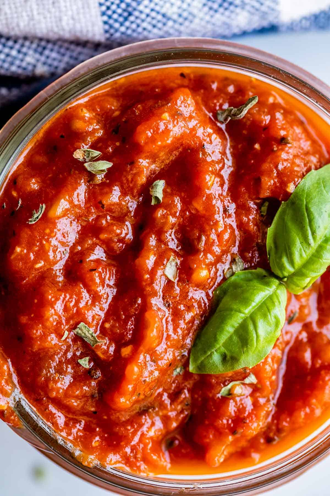

Pizza Sauce

Description
A simple recipe for pizza sauce. This recipe respects the principle of less is more and allows good ingredients to shine.
For this pizza sauce, it's important to choose high quality tomatoes. Whole, peeled San Marzano are an excellent choice.
Ingredients
- 1 can (800g) whole, peeled tomatoes
- kosher salt (8g)
- fresh basil - about 10 leaves
- olive oil
Steps
- In a large bowl, add tomatoes and crush with hands until large pieces are broken down. It need not be excessively smooth.
- Add salt, basil and a drizzle of olive oil. Stir to combine.
- Cover and rest in refrigerator overnight.